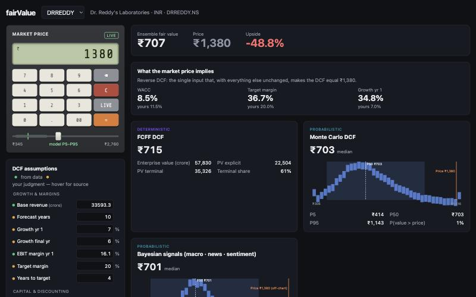

DR. REDDY'S · VALUATION DASHBOARD
Valuation dashboard
Price vs three pricers, at a glance
What it shows
The left rail holds a calculator-style market price pad (type a price, or press LIVE for the latest quote) with a slider that spans the models' P5 to P95 range. Below it are every DCF assumption, colour-coded green for from data and amber for your judgment; hover any field to see its source. The top row compares the ensemble fair value with the price and shows the upside. What the market price implies is a reverse DCF: for WACC, target margin and year-1 growth, it finds the single value that would make the DCF equal today's price.
How it works
Every change re-runs all three models through the FastAPI backend (POST /api/valuation), so the cards, histograms and reverse DCF update together.